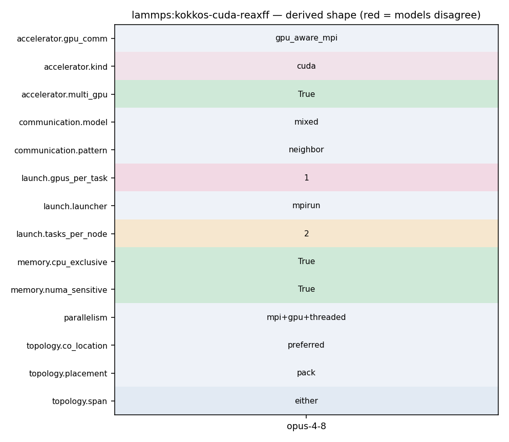

mpirun -np 32 -ppn 2 lmp -k on g 2 -sf kk -pk kokkos newton on neigh half -in in.reaxff
313 speedup (see the KOKKOS :doc:`package <package>` command). Using CUDA MPS 314 is recommended in this scenario. 315 316 Using a GPU-aware MPI library is highly recommended. GPU-aware MPI use can be 317 avoided by using :doc:`-pk kokkos gpu/aware off <package>`. As above for 318 multicore CPUs (and no GPU), if N is the number of physical cores/node, 319 then the number of MPI tasks/node should not exceed N.
57 { 58 kokkosable = 1; 59 comm_forward = comm_reverse = 2; // fused 60 forward_comm_device = reverse_comm_device = exchange_comm_device = sort_device = 1; 61 atomKK = (AtomKokkos *) atom; 62 execution_space = ExecutionSpaceFromDevice<DeviceType>::space; 63
35 36 Kokkos currently provides full support for 4 modes of execution (per MPI 37 task). These are Serial (MPI-only for CPUs and Intel Phi), OpenMP 38 (threading for many-core CPUs and Intel Phi), CUDA (for NVIDIA GPUs) and 39 HIP (for AMD GPUs). Additional modes (e.g. OpenMP target, Intel data 40 center GPUs) are under development. You choose the mode at build time 41 to produce an executable compatible with a specific hardware.
54 Wiki 55 <https://kokkos.org/kokkos-core-wiki/get-started/requirements.html>`_. 56 57 .. admonition:: NVIDIA CUDA support 58 :class: note 59 60 To build with Kokkos support for NVIDIA GPUs, the NVIDIA CUDA toolkit
327 328 .. code-block:: bash 329 330 # 1 node, 2 MPI tasks/node, 2 GPUs/node 331 mpirun -np 2 lmp_kokkos_cuda_openmpi -k on g 2 -sf kk -in in.lj 332 333 # 16 nodes, 2 MPI tasks/node, 2 GPUs/node (32 GPUs total)
330 # 1 node, 2 MPI tasks/node, 2 GPUs/node 331 mpirun -np 2 lmp_kokkos_cuda_openmpi -k on g 2 -sf kk -in in.lj 332 333 # 16 nodes, 2 MPI tasks/node, 2 GPUs/node (32 GPUs total) 334 mpirun -np 32 -ppn 2 lmp_kokkos_cuda_openmpi -k on g 2 -sf kk -in in.lj 335 336 .. note::
24 - Improved the SpMV algorithm by using vector instead of team level 25 parallelism on GPUs 26 Evan Weinberg (NVIDIA): Matrix-free representation 27 Balint Joo (NVIDIA): Device-resident reverse comms 28 ------------------------------------------------------------------------- */ 29 30 #include "fix_qeq_reaxff_kokkos.h"
24 - Improved the SpMV algorithm by using vector instead of team level 25 parallelism on GPUs 26 Evan Weinberg (NVIDIA): Matrix-free representation 27 Balint Joo (NVIDIA): Device-resident reverse comms 28 ------------------------------------------------------------------------- */ 29 30 #include "fix_qeq_reaxff_kokkos.h"
56 FixQEqReaxFF(lmp, narg, arg) 57 { 58 kokkosable = 1; 59 comm_forward = comm_reverse = 2; // fused 60 forward_comm_device = reverse_comm_device = exchange_comm_device = sort_device = 1; 61 atomKK = (AtomKokkos *) atom; 62 execution_space = ExecutionSpaceFromDevice<DeviceType>::space;
330 # 1 node, 2 MPI tasks/node, 2 GPUs/node 331 mpirun -np 2 lmp_kokkos_cuda_openmpi -k on g 2 -sf kk -in in.lj 332 333 # 16 nodes, 2 MPI tasks/node, 2 GPUs/node (32 GPUs total) 334 mpirun -np 32 -ppn 2 lmp_kokkos_cuda_openmpi -k on g 2 -sf kk -in in.lj 335 336 .. note::
304 ^^^^^^^^^^^^^^^ 305 306 Use the ``-k`` :doc:`command-line switch <Run_options>` to specify the 307 number of GPUs per node. Typically the ``-np`` setting of the ``mpirun`` command 308 should set the number of MPI tasks/node to be equal to the number of 309 physical GPUs on the node. You can assign multiple MPI tasks to the same 310 GPU with the KOKKOS package, but this is usually only faster if some
327 328 .. code-block:: bash 329 330 # 1 node, 2 MPI tasks/node, 2 GPUs/node 331 mpirun -np 2 lmp_kokkos_cuda_openmpi -k on g 2 -sf kk -in in.lj 332 333 # 16 nodes, 2 MPI tasks/node, 2 GPUs/node (32 GPUs total)
330 # 1 node, 2 MPI tasks/node, 2 GPUs/node 331 mpirun -np 2 lmp_kokkos_cuda_openmpi -k on g 2 -sf kk -in in.lj 332 333 # 16 nodes, 2 MPI tasks/node, 2 GPUs/node (32 GPUs total) 334 mpirun -np 32 -ppn 2 lmp_kokkos_cuda_openmpi -k on g 2 -sf kk -in in.lj 335 336 .. note::
206 ^^^^^^^^^^^^^^^^^^^^^^^^^^^^^^^^^^^^^^ 207 208 When using multi-threading, it is important for performance to bind 209 both MPI tasks to physical cores, and threads to physical cores, so 210 they do not migrate during a simulation. 211 212 If you are not certain MPI tasks are being bound (check the defaults
290 291 .. note:: 292 293 MPI tasks and threads should be bound to cores as described 294 above for CPUs. 295 296 .. note::
205 CPU Cores, Sockets and Thread Affinity 206 ^^^^^^^^^^^^^^^^^^^^^^^^^^^^^^^^^^^^^^ 207 208 When using multi-threading, it is important for performance to bind 209 both MPI tasks to physical cores, and threads to physical cores, so 210 they do not migrate during a simulation. 211
222 223 For binding threads with KOKKOS OpenMP, use thread affinity environment 224 variables to force binding. With OpenMP 3.1 (gcc 4.7 or later, intel 12 225 or later) setting the environment variable ``OMP_PROC_BIND=true`` should 226 be sufficient. In general, for best performance with OpenMP 4.0 or later 227 set ``OMP_PROC_BIND=spread`` and ``OMP_PLACES=threads``. For binding 228 threads with the KOKKOS pthreads option, compile LAMMPS with the hwloc
34 #include "comm.h" 35 #include "error.h" 36 #include "force.h" 37 #include "kokkos.h" 38 #include "memory_kokkos.h" 39 #include "neigh_list_kokkos.h" 40 #include "neigh_request.h"
33 with an external version of Kokkos, it is untested and may result in 34 incorrect execution or crashes. 35 36 Kokkos currently provides full support for 4 modes of execution (per MPI 37 task). These are Serial (MPI-only for CPUs and Intel Phi), OpenMP 38 (threading for many-core CPUs and Intel Phi), CUDA (for NVIDIA GPUs) and 39 HIP (for AMD GPUs). Additional modes (e.g. OpenMP target, Intel data
313 speedup (see the KOKKOS :doc:`package <package>` command). Using CUDA MPS 314 is recommended in this scenario. 315 316 Using a GPU-aware MPI library is highly recommended. GPU-aware MPI use can be 317 avoided by using :doc:`-pk kokkos gpu/aware off <package>`. As above for 318 multicore CPUs (and no GPU), if N is the number of physical cores/node, 319 then the number of MPI tasks/node should not exceed N.
304 ^^^^^^^^^^^^^^^ 305 306 Use the ``-k`` :doc:`command-line switch <Run_options>` to specify the 307 number of GPUs per node. Typically the ``-np`` setting of the ``mpirun`` command 308 should set the number of MPI tasks/node to be equal to the number of 309 physical GPUs on the node. You can assign multiple MPI tasks to the same 310 GPU with the KOKKOS package, but this is usually only faster if some
330 # 1 node, 2 MPI tasks/node, 2 GPUs/node 331 mpirun -np 2 lmp_kokkos_cuda_openmpi -k on g 2 -sf kk -in in.lj 332 333 # 16 nodes, 2 MPI tasks/node, 2 GPUs/node (32 GPUs total) 334 mpirun -np 32 -ppn 2 lmp_kokkos_cuda_openmpi -k on g 2 -sf kk -in in.lj 335 336 .. note::
313 speedup (see the KOKKOS :doc:`package <package>` command). Using CUDA MPS 314 is recommended in this scenario. 315 316 Using a GPU-aware MPI library is highly recommended. GPU-aware MPI use can be 317 avoided by using :doc:`-pk kokkos gpu/aware off <package>`. As above for 318 multicore CPUs (and no GPU), if N is the number of physical cores/node, 319 then the number of MPI tasks/node should not exceed N.
330 # 1 node, 2 MPI tasks/node, 2 GPUs/node 331 mpirun -np 2 lmp_kokkos_cuda_openmpi -k on g 2 -sf kk -in in.lj 332 333 # 16 nodes, 2 MPI tasks/node, 2 GPUs/node (32 GPUs total) 334 mpirun -np 32 -ppn 2 lmp_kokkos_cuda_openmpi -k on g 2 -sf kk -in in.lj 335 336 .. note::